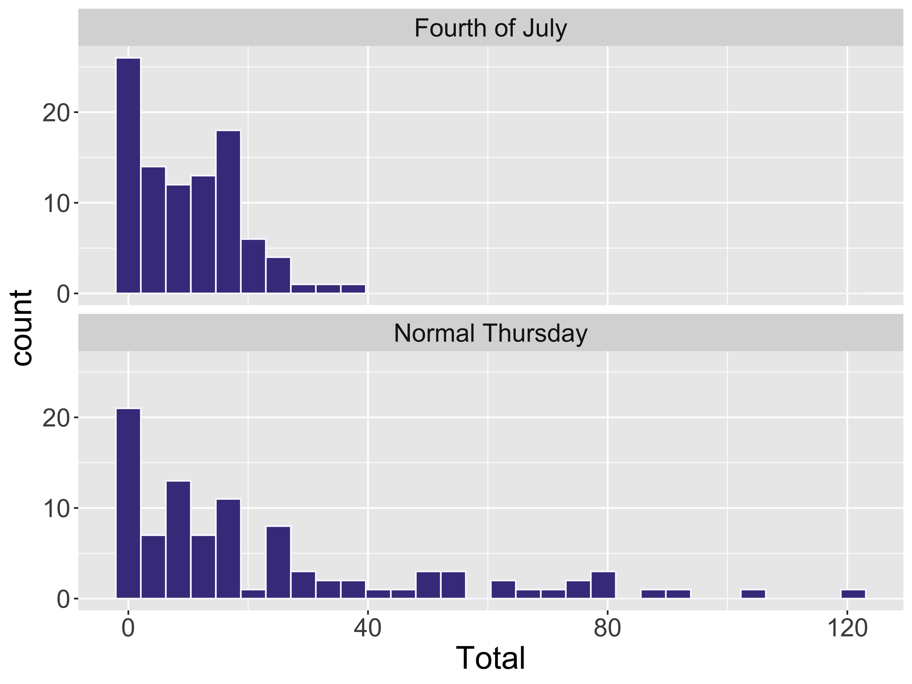
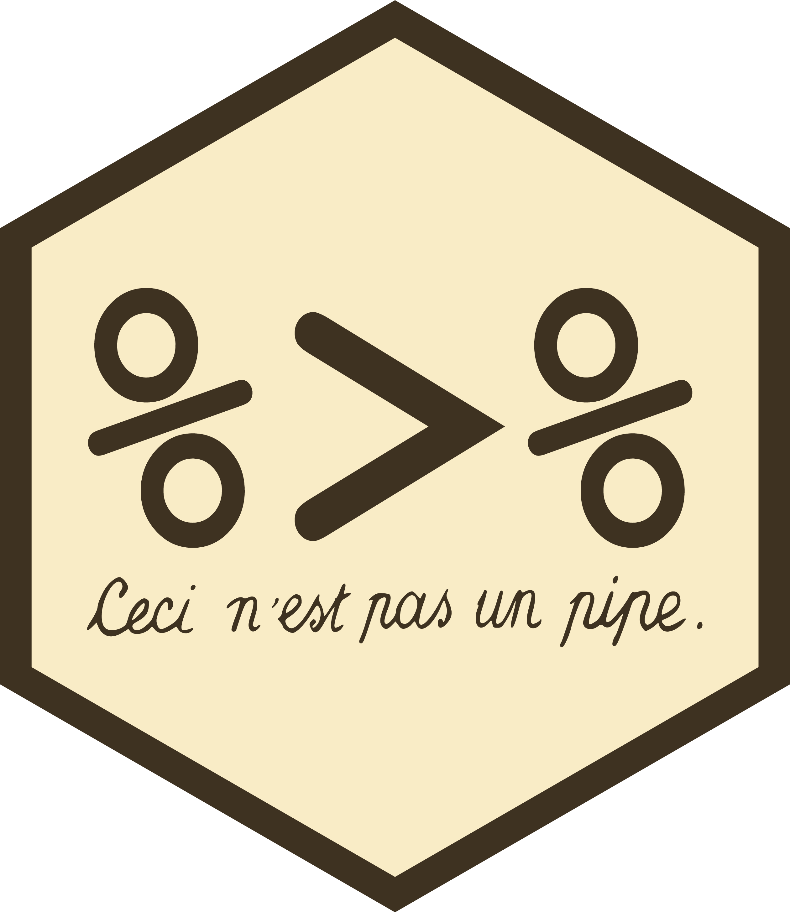
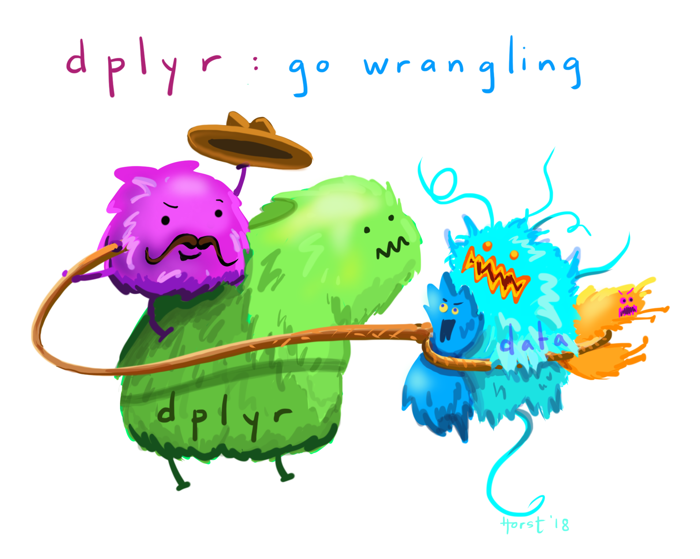

Data Wrangling & Summarization
Kelly McConville
DATA 100
Week 3 | Spring 2026
Announcements
- Code a Valentine: Feb 10th, Taylor 212
Goals for Today
- Consider measures for summarizing quantitative data
- Center
- Spread/variability
- Consider measures for summarizing categorical data
Define data wrangling
Learn to use functions in the
dplyrpackage to summarize and wrangle data
Load Necessary Packages

dplyr is part of the tidyverse collection of data science packages.
Import the Data
Rows: 192
Columns: 8
$ DateTime <chr> "07/04/2019 12:00:00 AM", "07/04/2019 12:15:00 AM", "07/04/2…
$ Day <chr> "Thursday", "Thursday", "Thursday", "Thursday", "Thursday", …
$ Date <date> 2019-07-04, 2019-07-04, 2019-07-04, 2019-07-04, 2019-07-04,…
$ Time <time> 00:00:00, 00:15:00, 00:30:00, 00:45:00, 01:00:00, 01:15:00,…
$ Total <dbl> 2, 3, 2, 0, 3, 2, 1, 0, 0, 0, 0, 0, 1, 1, 0, 0, 0, 0, 1, 1, …
$ Westbound <dbl> 2, 3, 1, 0, 2, 2, 1, 0, 0, 0, 0, 0, 1, 1, 0, 0, 0, 0, 0, 1, …
$ Eastbound <dbl> 0, 0, 1, 0, 1, 0, 0, 0, 0, 0, 0, 0, 0, 0, 0, 0, 0, 0, 1, 0, …
$ Occasion <chr> "Fourth of July", "Fourth of July", "Fourth of July", "Fourt…Summarizing Data
Hard to do by eyeballing a spreadsheet with many rows!
| DateTime | Day | Date | Time | Total | Westbound | Eastbound | Occasion |
|---|---|---|---|---|---|---|---|
| 07/04/2019 06:00:00 AM | Thursday | 2019-07-04 | 06:00:00 | 1 | 1 | 0 | Fourth of July |
| 07/04/2019 06:15:00 AM | Thursday | 2019-07-04 | 06:15:00 | 4 | 0 | 4 | Fourth of July |
| 07/04/2019 06:30:00 AM | Thursday | 2019-07-04 | 06:30:00 | 9 | 1 | 8 | Fourth of July |
| 07/04/2019 06:45:00 AM | Thursday | 2019-07-04 | 06:45:00 | 5 | 0 | 5 | Fourth of July |
| 07/04/2019 07:00:00 AM | Thursday | 2019-07-04 | 07:00:00 | 3 | 3 | 0 | Fourth of July |
| 07/04/2019 07:15:00 AM | Thursday | 2019-07-04 | 07:15:00 | 2 | 0 | 2 | Fourth of July |
| 07/04/2019 07:30:00 AM | Thursday | 2019-07-04 | 07:30:00 | 5 | 2 | 3 | Fourth of July |
| 07/04/2019 07:45:00 AM | Thursday | 2019-07-04 | 07:45:00 | 2 | 0 | 2 | Fourth of July |
Summarizing Data Visually

For a quantitative variable, want to answer:
What is an average value?
What is the trend/shape of the variable?
How much variation is there from case to case?
Need to learn key summary statistics: Numerical values computed based on the observed cases.
Measures of Center
Mean: Average of all the observations
- \(n\) = Number of cases (sample size)
- \(x_i\) = value of the i-th observation
- Denote by \(\bar{x}\)
\[ \bar{x} = \frac{1}{n} \sum_{i = 1}^n x_i \]
Measures of Center
Median: Middle value
- Half of the data falls below the median
- Denote by \(m\)
- If \(n\) is even, then it is the average of the middle two values
Measures of Center
Computing Measures of Center by Groups
Question: Were there more bikes, on average, for Fourth of July or for the normal Thursday?

Computing Measures of Center by Groups
Handy dplyr function: group_by()
# A tibble: 192 × 8
# Groups: Occasion [2]
DateTime Day Date Time Total Westbound Eastbound Occasion
<chr> <chr> <date> <tim> <dbl> <dbl> <dbl> <chr>
1 07/04/2019 12:00:0… Thur… 2019-07-04 00:00 2 2 0 Fourth …
2 07/04/2019 12:15:0… Thur… 2019-07-04 00:15 3 3 0 Fourth …
3 07/04/2019 12:30:0… Thur… 2019-07-04 00:30 2 1 1 Fourth …
4 07/04/2019 12:45:0… Thur… 2019-07-04 00:45 0 0 0 Fourth …
5 07/04/2019 01:00:0… Thur… 2019-07-04 01:00 3 2 1 Fourth …
6 07/04/2019 01:15:0… Thur… 2019-07-04 01:15 2 2 0 Fourth …
7 07/04/2019 01:30:0… Thur… 2019-07-04 01:30 1 1 0 Fourth …
8 07/04/2019 01:45:0… Thur… 2019-07-04 01:45 0 0 0 Fourth …
9 07/04/2019 02:00:0… Thur… 2019-07-04 02:00 0 0 0 Fourth …
10 07/04/2019 02:15:0… Thur… 2019-07-04 02:15 0 0 0 Fourth …
# ℹ 182 more rowsComputing Measures of Center by Groups
Compute summary statistics on the grouped data frame:

And now it is time to learn the pipe: %>%

Chaining dplyr Operations
Instead of:
- Why pipe?
- You can also use
|>, which is newer and often referred to as the “baseRpipe.”
Measures of Variability
- Want a statistic that captures how much observations deviate from the mean
- Find how much each observation deviates from the mean.
- Compute the average of the deviations.
\[ \frac{1}{n} \sum_{i = 1}^n (x_i - \bar{x}) \]
Problem?
Measures of Variability
- Want a statistic that captures how much observations deviate from the mean
Measures of Variability
- Want a statistic that captures how much observations deviate from the mean
Here is my ACTUAL formula:
- Find how much each observation deviates from the mean.
- Compute the (nearly) average of the squared deviations.
- Called sample variance \(s^2\).
\[ s^2 = \frac{1}{n - 1} \sum_{i = 1}^n (x_i - \bar{x})^2 \]
Measures of Variability
- Want a statistic that captures how much observations deviate from the mean
- Find how much each observation deviates from the mean.
- Compute the (nearly) average of the squared deviations.
- Called sample variance \(s^2\).
- The square root of the sample variance is called the sample standard deviation \(s\).
\[ s = \sqrt{\frac{1}{n - 1} \sum_{i = 1}^n (x_i - \bar{x})^2} \]
Measures of Variability
Comparing Measures of Variability
Which is more robust to outliers, the IQR or \(s\)?
Which is more commonly used, the IQR or \(s\)?
Summarizing Categorical Variables
Return to the Buffalo Bills Data
Frequency Table
Frequency Table
geom_col() versus geom_bar()
If you have already aggregated the data, you will use geom_col() instead of geom_bar().
geom_col() Example
Another ggplot2 geom: geom_col()
And use fct_reorder() instead of fct_infreq() to reorder bars.
Contingency Table
Conditional Proportions
Conditional Proportions
- The dplyr function
mutate()adds new column(s) to your data frame.
Conditional Proportions
How does the interpretation change based on which variable you condition on?

Data Wrangling: Transformations done on the data
Why wrangle the data?
To summarize the data.
→ To compute the mean and standard deviation of the bike counts.
To drop missing values. (Need to be careful here!)
→ On our P-Set 3, we will see that ggplot2 will often drop observations before creating a graph.
To filter to a particular subset of the data.
→ To subset down to just games involving Buffalo.
Data Wrangling: Transformations done on the data
Why wrangle the data?
To arrange the data to make it easier to display.
→ To sort from the a game’s best point differential to the worst.
To fix how R stores a variable.
→ To convert game_outcomes to be a factor() so that R would treat it like a categorical variable.
→ To join data frames when information about your cases is stored in multiple places!
Will see examples of this next class!
dplyr for Data Wrangling
- Seven common wrangling verbs:
summarize()count()
mutate()
select()filter()arrange()---_join()
- One action:
group_by()
Return to mutate()
Add new variables
select(): Extract variables
Motivation for filter()
filter(): Extract cases
# A tibble: 29 × 2
home_team n
<chr> <int>
1 BUF 57
2 MIA 6
3 NE 6
4 NYJ 6
5 KC 5
6 TEN 3
7 BAL 2
8 HOU 2
9 ARI 1
10 CHI 1
# ℹ 19 more rows# A tibble: 2 × 2
where n
<chr> <int>
1 away 51
2 home 57arrange(): Sort the cases
# A tibble: 108 × 5
home_team away_team home_score away_score score_diff
<chr> <chr> <dbl> <dbl> <dbl>
1 MIA BUF 0 35 -35
2 WAS BUF 3 37 -34
3 BUF CHI 9 41 -32
4 NYJ BUF 10 41 -31
5 DEN BUF 19 48 -29
6 NE BUF 9 38 -29
7 NYJ BUF 17 45 -28
8 BUF IND 15 41 -26
9 NO BUF 6 31 -25
10 CHI BUF 13 35 -22
# ℹ 98 more rows# A tibble: 108 × 5
home_team away_team home_score away_score score_diff
<chr> <chr> <dbl> <dbl> <dbl>
1 BAL BUF 47 3 44
2 BUF HOU 40 0 40
3 BUF PIT 38 3 35
4 BUF TEN 41 7 34
5 IND BUF 37 5 32
6 BUF MIA 56 26 30
7 BUF NE 47 17 30
8 BUF LV 38 10 28
9 BUF MIA 48 20 28
10 TEN BUF 42 16 26
# ℹ 98 more rowsWill see more data wrangling next week!
Reminders
- Code a Valentine: Feb 10th, Taylor 212